Загалом у Харкові – близько 20-ти фонтанів.
Найвідоміші – біля оперного театру, у парку Шевченка, на площі Архітекторів, на Дзеркальному струмені, у Центральному парку, на площі Свободи, на Каскаді, у Покровському сквері.
Фонтан "Каскад" із граючими мавпами
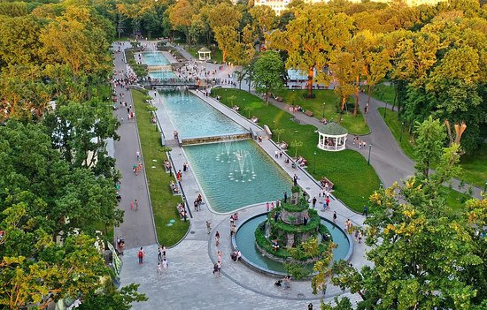У Харкові в літню спеку порадують прекрасні фонтани. Трохи позаду пам'ятника Шевченку ви побачите сучасну гордість міста - новий фонтанний комплекс. Він складається з декількох частин, які поділяють кований місток і каскадні сходи й форми басейнів, що відображають всю красу і силу водного потоку. У вечірню пору фонтан підсвічують, що створює феєричне видовище дивного танцю різнокольорових водних струменів і сяючою з глибини водної гладі. Біля нового озера та входу до зоопарку було збудовано декоративний фонтан зі світломузикою у формі скелі, на якій на різних музичних інструментах грають мавпи. Композиція складається з 13 музичних мавпочок. Одна, на самому верху, з мікрофоном - солістка. Решта розташовані на декількох рівнях. Кожен з персонажів грає на музичному інструменті. Всі фігурки разом рухаються під музику. Фонтан складається з чотирьох рівнів. Водночас вода у фонтані ллється тільки з двох нижніх рівнів. Висота конструкції майже 7,5 метра.
Фонтан у Саду імені Тараса Шевченка
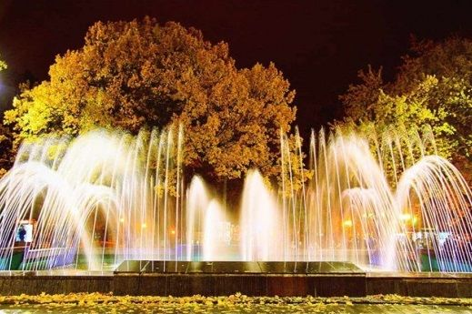Перший фонтан в саду ім. Т. Шевченка у Харкові було споруджено ще у 1935, а у 1965 році на цьому місці з’явився перший в Україні світло-музичний фонтан. 23 серпня 2015 року відбулося святкове відкриття відреставрованого фонтану, приурочене до Дня міста. Краса фонтану розкривається з заходом сонця, саме тоді можна сповна насолодитися чарівним дійством музики та світла. Програма фонтану складається з творів світової класики - увертюри до оперети «Летюча миша» та вальсу «На голубому прекрасному Дунаї» Йоганна Штрауса, увертюри до опери «Весілля Фігаро» Вольфганга Моцарта.
«Cухий» пішохідний круглий фонтан
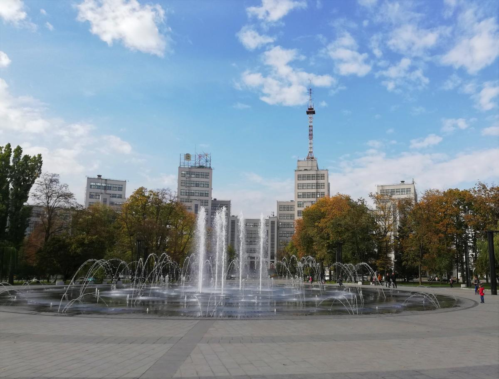Найбільший в Україні «сухий» пішохідний круглий фонтан діаметром 36 метрів. Він має сім кілець з 150 форсунками, які випускають струмені води у різних запрограмованих комбінаціях. Фонтан також обладнаний світлодіодними лампами білого кольору з кількома варіантами підсвічування. Відкритий 23 серпня 2020 року, на честь Дня міста.
Фонтан «Дзеркальний струмінь»
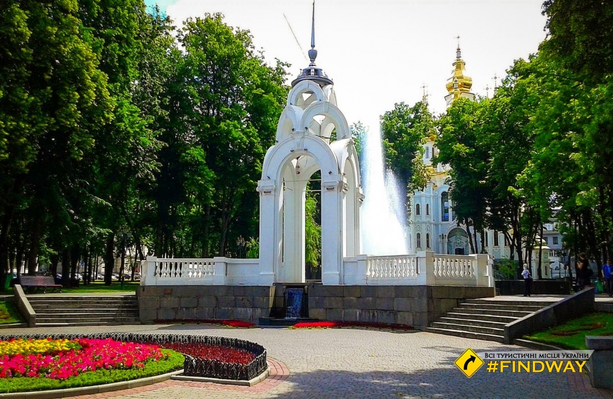«Дзеркальний струмінь» — один із один символів Харкова, відоме місце фотосесій та просто прикраса міста. Його побудували у 1947 р. Свою назву фонтан отримав через струмені води, що ніби вириваються з чаші. Під час роботи фонтану утворюється штучний туман, створюваний прожектором. Це робить його унікальним та напрочуд гарним.
Фонтани біля ХАТОБу
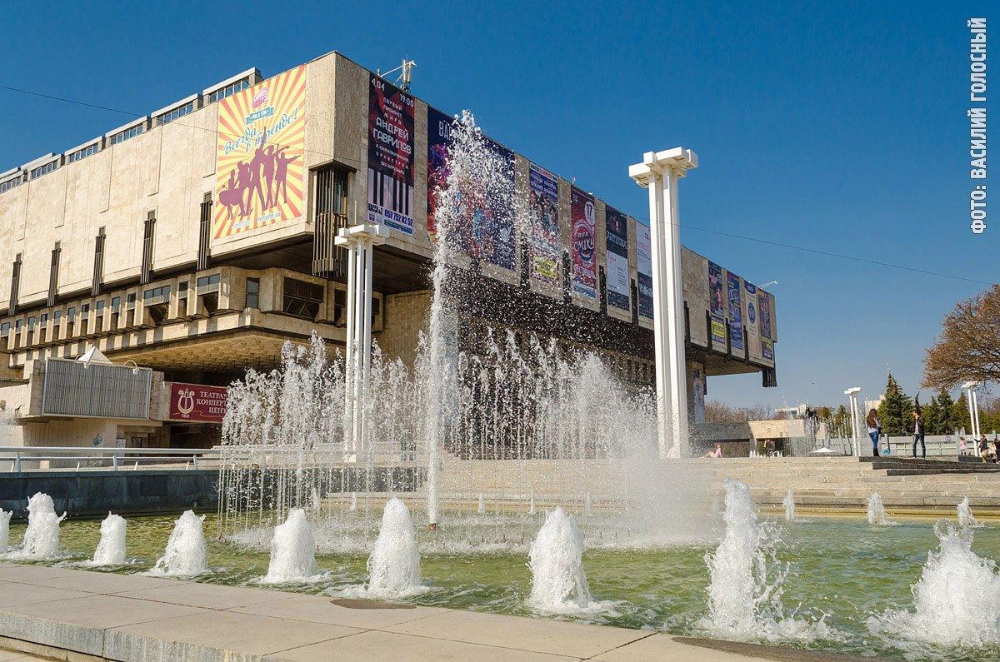ХАТОБ – саме собою дивовижне місце, де життя тече цілодобово. А в теплу пору року, коли вмикається підсвічування, майданчик біля театру перетворюється на улюблене місце відпочинку городян.
Фонтан на Привокзальній площі
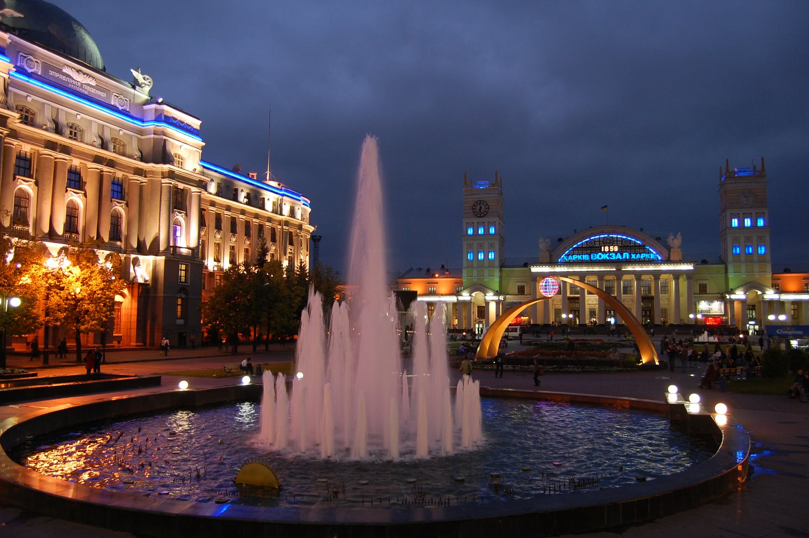Перше, що бачать люди, що приїжджають у наше місто, – це Привокзальна площа. Декілька років тому після реконструкції вона стала справжньою гордістю. Адже тут з'явився величезний фонтан. Пройти повз нього, не звернувши уваги, просто неможливо.
«Каскад» і новий фонтан в саду Шевченка
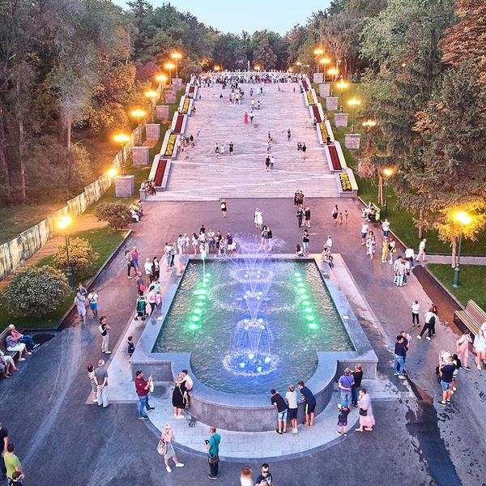До Дня міста 23 серпня 2019 року в саду Шевченка після реконструкції відкрили «Каскад» і новий фонтан.Каскад повністю оновили: реконструювали комунікації, мережі зовнішнього освітлення, несучі конструкції і створили додаткові, а також побудували систему зливової каналізації. Також були встановлені відеоспостереження, декоративне підсвічування і система музичного супроводу. Внизу і вгорі сходового маршу побудували два нових фонтани і реконструювали старий - на верхній терасі. Крім того, поруч облаштували клумби, розбили нові газони, встановили лавки, систему автоматичного поливу, посадили декоративні дерева і чагарники.
Фонтан в Соборному сквері
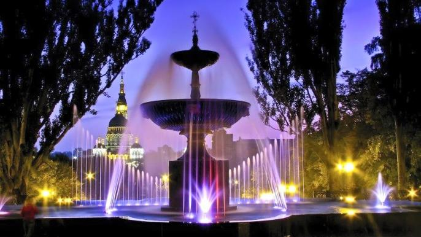Фонтан в Соборному сквері відомий своєю величезною струменевою конструкцією і вражаючим водним шоу. Завдяки ретельному плануванню та професійному дизайну, фонтан привертає увагу відвідувачів своєю елегантністю та красою. Великі струмени води, розташовані на різних рівнях, створюють неймовірні комбінації та інтерактивні водяні шоу, які зачаровують кожного глядача.
Головний фонтан у Центральному парку
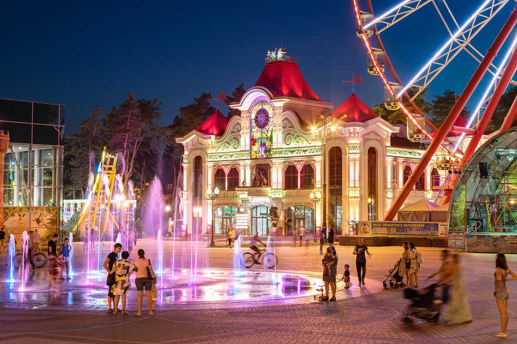Унікальна визначна пам'ятка з кольоровими ефектами знаходиться наприкінці Головної алеї Центрального парку. Отримавши задоволення від відвідування дитячих атракціонів, катання на канатній або дитячій залізниці, можна відпочити та освіжитися поряд із казковим фонтаном, що випускає кольорові струмені. Найкраще насолоджуватися фонтаном у вечірній час, коли починається світлове шоу та з'являються унікальні водні фігури.
Фонтан на озері у Центральному парку
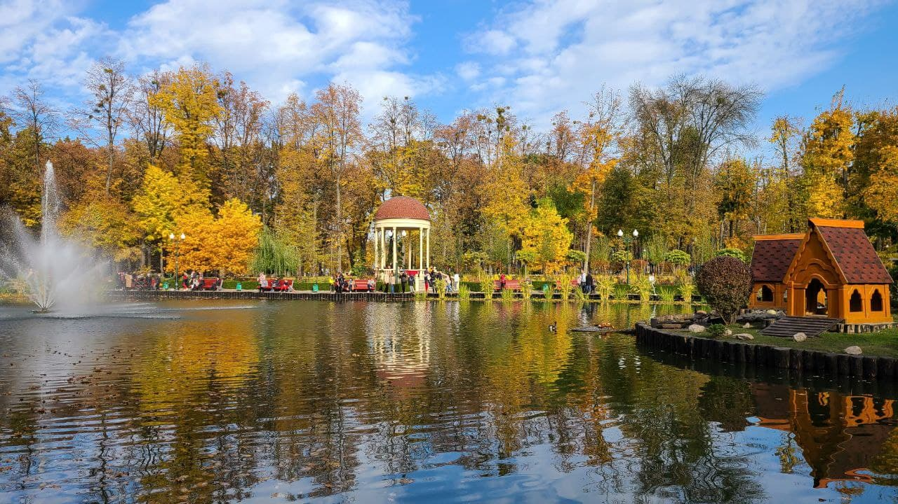Фонтан на озері - найчарівніше місце парку. Тут прекрасно прогулюватися або відпочивати на лавах, в альтанках. На озері мешкають лебеді і качки, цвітуть лілії і росте безліч зелені.
Фонтан на бульварі Юр'єва
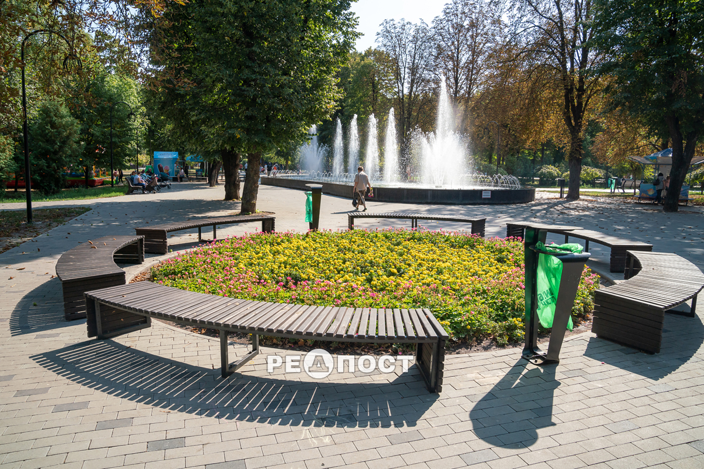Бульвар Юр'єва має найбільший в країні урбан-парк, тут знаходяться алеї, майданчики й фонтан з підсвічуванням.